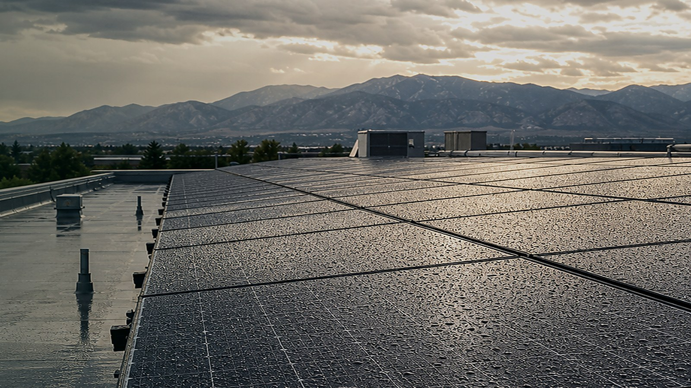

Commercial Solar Maintenance
Commercial Rooftop Solar Panel Cleaning in Denver
Post-storm cleaning, inspection support, and photo documentation for commercial rooftop solar assets across Denver, Aurora, and the Colorado Front Range.
Documentation
Before and After Proof
We document access, visible buildup, cleaning results, and notable roof or array conditions after service.
Operations
Flexible Site Coordination
We can coordinate with property managers, solar partners, facility teams, and owner representatives before work begins.
Care
Panel-Safe Methods
Pure-water cleaning and non-abrasive tools help remove soiling without harsh chemicals or unnecessary roof disruption.
When to Schedule
Useful after storms, pollen, roof runoff, or visible production loss
Commercial rooftops collect mineral spotting, roof runoff residue, pollen film, and drainage-pattern buildup differently than residential arrays. Cleaning is especially useful after spring weather, wildfire smoke, dust events, roof work, or when a property manager needs documentation for solar asset upkeep.
- Commercial solar panel cleaning for rooftops, flat roofs, and hard-to-see arrays.
- Inspection-style photos that help owners understand visible soiling, access, and condition notes.
- Support for property managers, HOAs, solar companies, and business owners across the Denver metro.
Commercial Quote
Request a commercial solar site check
Use the main quote form and select commercial rooftop/O&M support. Include the property address, access notes, approximate array size, and whether you need cleaning, inspection photos, or recurring maintenance support.
Start Commercial QuoteLocal Service Pages
Solar cleaning coverage across the Denver metro
Commercial Solar Questions
Commercial rooftop cleaning FAQ
Who uses commercial solar panel cleaning?
Property managers, building owners, HOAs, solar partners, and facility teams use cleaning when rooftop arrays have visible buildup, access concerns, or documentation needs.
Can you provide photo documentation?
Yes. Commercial jobs can include photos of access, visible soiling, cleaning results, roofline conditions, and notes that help owners or managers keep records.
Do you coordinate with solar companies or facility teams?
Yes. We can coordinate timing, access notes, service scope, and documentation needs with property managers, solar companies, O&M partners, or owner representatives.
When should a commercial rooftop array be cleaned?
Cleaning is worth reviewing after storms, pollen, wildfire smoke, roof work, construction dust, visible runoff residue, or when performance reports suggest soiling may be a factor.